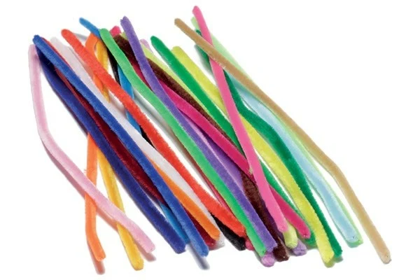

¿Cómo creamos nuestros arreglos?
En By Mei cada arreglo es hecho a mano con dedicación y creatividad. Utilizamos materiales de calidad y mucho cariño para que cada detalle sea especial y transmita alegría.
Materiales que usamos:
- Limpiapipas
- Barritas de silicón
- Pistola de silicón
- Silicón frío
- Palitos de plástico
- Papel coreano
- Listones
- Notitas
- Brochas
- Polvo para difuminar
¿Cómo es el proceso?
- Seleccionamos los materiales y colores según la ocasión o el pedido.
- Diseñamos y armamos cada arreglo con creatividad y cuidado.
- Agregamos detalles personalizados como notitas o dedicatorias.
- Empaquetamos el arreglo para que llegue en perfectas condiciones.
Cada producto es único y pensado para unir personas, alegrar corazones y crear recuerdos inolvidables.

“La creatividad y el amor están en cada detalle.”